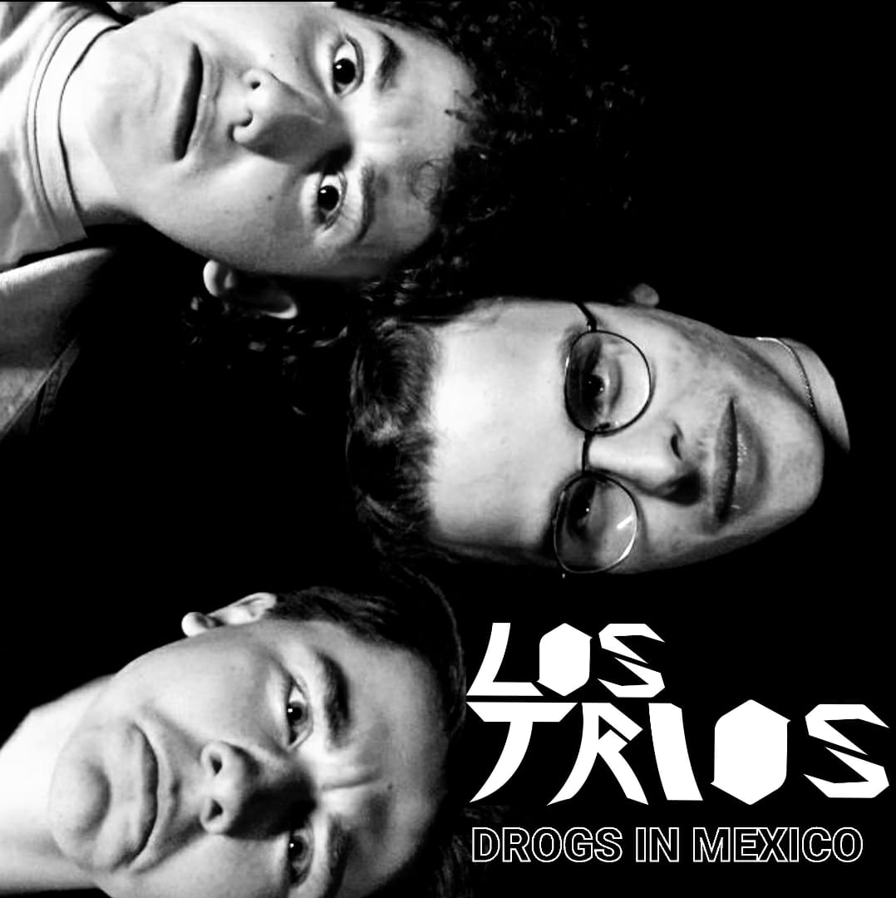

Musik

Unser erstes Album (bald)

Musikvideo #1

Musikvideo #2
Los Trios gibt es seit Dezember 2022 – eine kreative Rock-Band, die vor allem eines im Gepäck hat: jede Menge Spass an der Musik. Angefangen haben wir als Trio mit Johnny an den kraftvollen Powerchords, Kelvin an der Lead-Gitarre und Bobby an den Solos. Kurz darauf kam unsere Sängerin dazu, und gemeinsam holten wir Bablo ans Schlagzeug, die auch mit Gesang unterstützt. Unser Bassist ist vor Kurzem ausgestiegen, aber wir sind schon auf der Suche nach Verstärkung.
Unsere Songs entstehen oft aus einem Riff, das Johnny mitbringt, und werden dann von uns gemeinsam weiterentwickelt. Die Texte schreibt vor allem unsere Sängerin zusammen mit Bablo. Dabei probieren wir viel aus: Wir nehmen alles auf, besprechen und feilen so lange, bis der Sound für uns stimmt.
Live sind wir voller Energie und Spass – das spürt auch unser Publikum, das uns bei unseren Auftritten unterstützt und mitzieht. Bisher hatten wir zwei lokale Gigs, und bald geht’s ins Studio (Access Audio Productions), um unser erstes Album mit fünf Songs aufzunehmen. Darin erzählen wir die Geschichte von drei Brüdern – mal laut und zum Abgehen, mal melancholisch und nachdenklich. Unsere Musikvideos sind zwar noch low-budget, dafür mit viel Herz gemacht.
Jeder von uns ist leidenschaftlicher Rock-Fan, und obwohl wir alle unterschiedliche Lieblingsbands haben, verbinden uns Kreativität und die Liebe zur Musik.
Das sind Los Trios – kreativ, energiegeladen und immer für einen guten Song zu haben.
Unser erstes Album (bald)
Musikvideo #1
Musikvideo #2